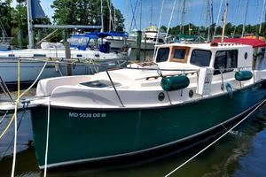

B-Atlas Boat Guide · NMBL-32-WA
Nimble Wanderer Power Cruiser / Optional Motorsailer
1996–2004
The Nimble Wanderer is a Ted Brewer-designed 32-foot shallow-draft pilothouse cruiser offered with or without a sailing rig. Power-oriented examples use a single diesel and long keel; rigged boats are best understood as motorsailers rather than conventional trawlers.

- Length
- 32.42 ft
- Beam
- 8.5 ft
- Draft
- 2.83 ft
- Hull behaviour
- Semi-Displacement
- Fuel
- Diesel
- Propulsion
- Shaft
- Engine configuration
- Single diesel inboard; mastless power and motorsailer versions documented
- Boat family
- Trawler
- Construction
- Fiberglass
Best for
- Owners prioritizing trailerability, shallow draft and distinctive traditional character
- Couples exploring inland waterways and protected coastal cruising grounds
- Buyers comfortable with uncommon low-volume boats
Trade-offs
- Narrow beam limits interior and side-deck space
- Low-volume production means parts, documentation and resale comparisons can be sparse
- Kodiak and rigged Wanderer versions introduce sailing systems that do not fit a pure powerboat comparison
Known concerns
- No model-specific concern has been promoted to B-Atlas’s evidence threshold. This does not mean the model has no age-, condition- or hull-specific risks.
Inspection focus
- Confirm exact hull, rig and propulsion configuration
- Inspect deck/hull core, pilothouse joints and hardware penetrations
- Inspect propulsion installation, steering and fuel system
- For rigged Kodiak/Wanderer examples, inspect mast step, rigging, chainplates and centerboard/keel systems
Continue researching
Related boat models
Nimble Nomad Pocket Trawler
24.5 ft · Displacement
Cutwater C-28 Cruiser
32.33 ft · Semi-Displacement
Beneteau Swift Trawler 30 Flybridge
32.75 ft · Semi-Displacement
Cape Dory 33 PowerYacht Flybridge
32.83 ft · Planing / Modified-V
Cheoy Lee 32 Trawler Trawler
31.92 ft · Semi-Displacement
Grand Banks 32 Sedan
31.92 ft · Semi-Displacement
About this record
B-Atlas preserves uncertainty: missing information remains unknown rather than being treated as a negative. Specifications and guidance describe the model record; individual boats can differ by year, equipment, refit and condition.